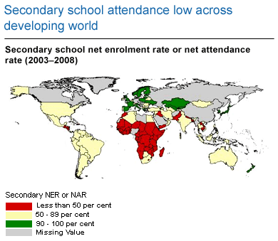

QUALITY OF EDUCATION
What are the problems of education in developing
countries?
10 obstacles to
overcome to improve education in developing.
*Inequality: The world's
illiterate population consists of 780 million people.
* Primary education.
*Inefficient school networks
* Involving parents
*Lack of
democratisation.
* Economic recession
*Lack of expertise
* Lack of
teaching staff
why is education so bad in developing contries?
The problem in many developing countries is that governments lack either the
financial resources or the political will to meet their citizens' educational
needs.
In response, poor parents in some low income countries have organized and
paid for their children's education themselves.
